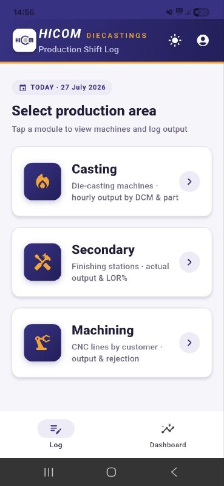
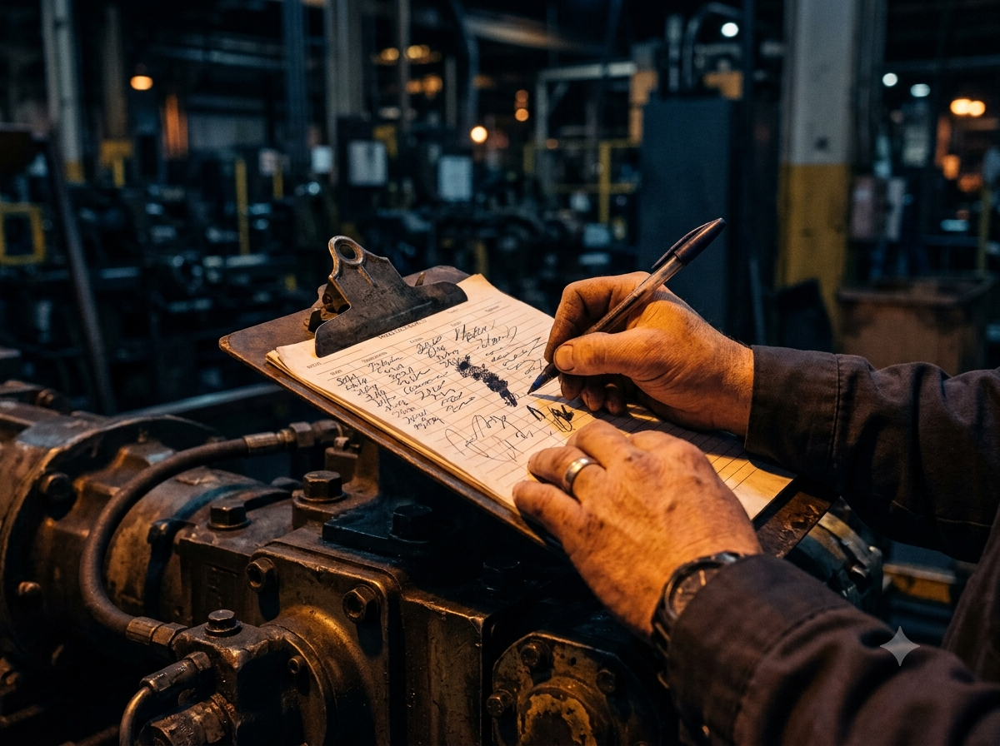
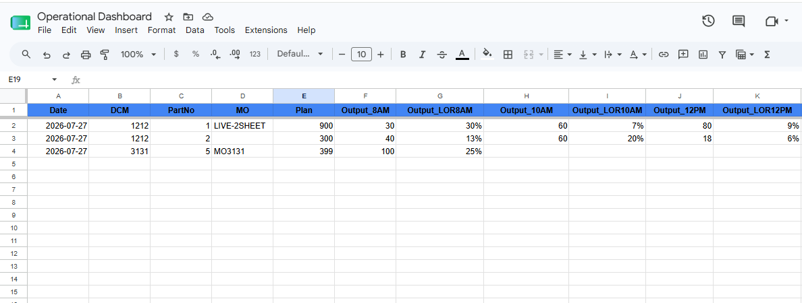
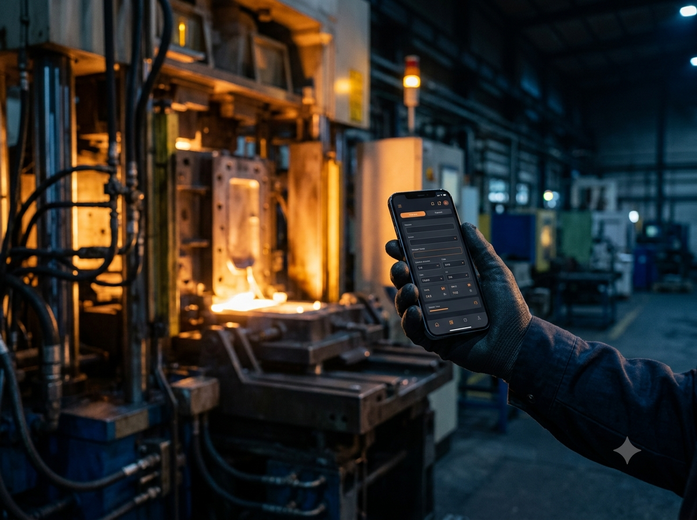

Every shift, every machine, keyed in on the floor and saved to the master sheet the same second. No re-typing at day-end. No lost paper. Just live numbers — and the LOR% worked out for you.

The same numbers, written twice, read late. Here's what changes the day the clipboard goes away.



Pick the machine, the shift and the part, type the output. The app fills in the MO and the time slot for you.
It writes to your Google Sheet the same second — the database your team already trusts, no export, no import.
LOR% and daily trends update instantly. The office sees the plant's real numbers while the shift is still running.
Casting, Secondary and Machining — each keeps its own shape, all on the same Day/Night, MO and live-LOR% model.
Die-casting machines (DCM) and their parts. Six checkpoints a shift, output against plan, LOR% the moment you enter it.
Finishing stations and their parts. Same two-shift rhythm, same instant LOR% — actual against plan, checkpoint by checkpoint.
Customer → part → line, one level deeper. Output and rejection tracked per checkpoint, LOR% and scrap side by side.
A shift starts at 8 AM or 8 PM — not midnight. Night's early hours file under the shift that logged them.
Set the month's manufacturing order once. Every log stamps the MO that was live when it was recorded.
Output ÷ plan, worked out the instant you type — no calculator, no formula to copy down.
Daily output, LOR% and rejection, both shifts summed — a dashboard that's current, not a day behind.
Install HICOM Ops on any Android phone or tablet on the floor. It logs to the same sheet your team already runs on — start today, keep every record you already have.
Android only. After it downloads, open the file and allow install from your file manager. Needs internet — it logs to the live sheet.